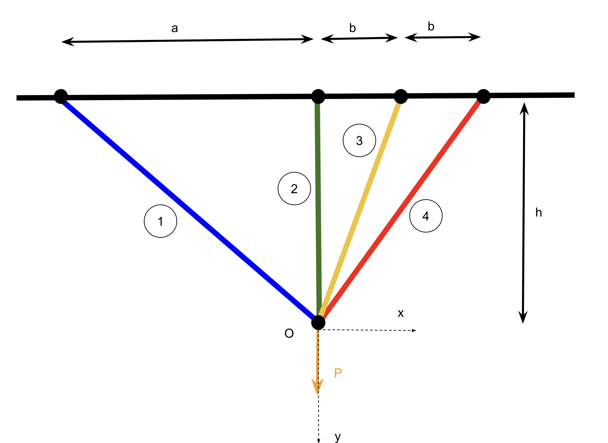
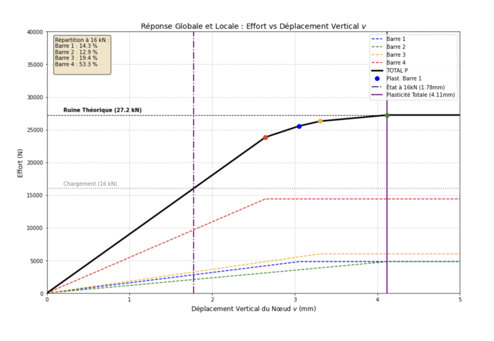
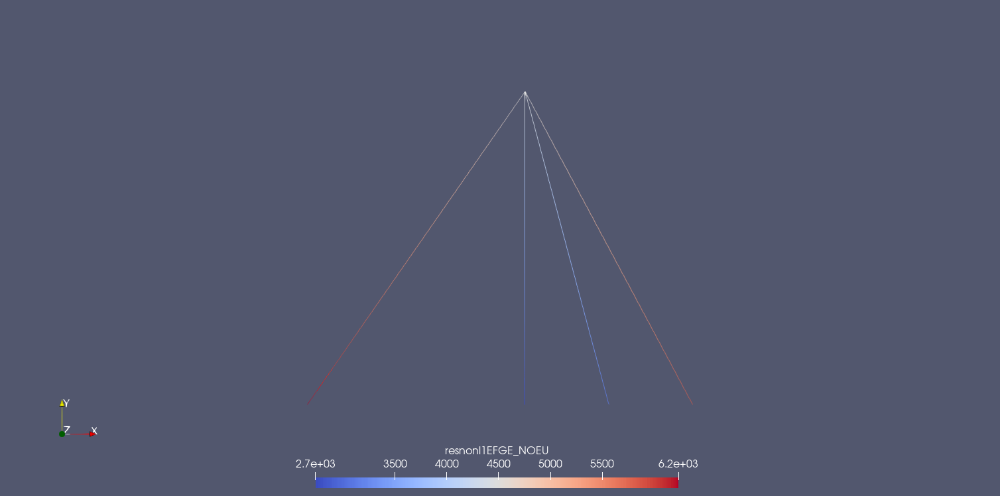

Définition du Problème
L'objectif de cette étude est de déterminer la capacité portante et le comportement non-linéaire d'un système hyperstatique constitué de quatre barres articulées. La structure est soumise à un chargement vertical concentré $P$.
La complexité du problème réside dans l'hétérogénéité des matériaux utilisés (deux barres en acier et deux en aluminium) et dans l'application d'une loi de comportement Élasto-Plastique Parfaite (EPP).

Approche Analytique vs Numérique
Avant de lancer toute simulation, une analyse théorique approfondie a été menée. Afin d'évaluer l'impact des non-linéarités géométriques, les déplacements ont été calculés sous l'Hypothèse des Petites Perturbations (HPP) puis comparés avec la théorie des grands déplacements de Green-Lagrange.
L'étude a ensuite été basculée dans un environnement éléments finis :
- Modélisation : Création d'un maillage 1D (éléments de type BARRE) sous SalomeMeca, les barres travaillant uniquement en traction/compression.
- Résolution : Mise en données dans Code_Aster via l'opérateur
STAT_NON_LINEpour gérer correctement la plasticité lors d'un cycle de charge-décharge (jusqu'à $P_{max} = 16000$ N).

Cartographie des Contraintes
Les résultats issus de Paraview ont permis de valider la distribution spatiale des efforts. L'analyse montre clairement que la rigidité pilote la répartition de la charge : la Barre 4 (en acier) encaisse à elle seule près de 53% de l'effort total.

Conclusions & Validation
La confrontation entre la théorie et la simulation a mené aux conclusions suivantes :
- Petites déformations justifiées : L'écart entre le modèle HPP et les grands déplacements n'est que de 0,05% pour ce chargement.
- Séquence de ruine : L'analyse a prédit que la Barre 4 initiera la ruine du système (plastification à $v \approx 2.64$ mm), ce que les contraintes EF ont confirmé.
- Cycle Charge-Décharge : La charge de 16 kN représentant 59% de la charge de ruine théorique ($P_{ruine} = 27.2$ kN), le système travaille strictement dans le domaine élastique. La déformation résiduelle est donc nulle.